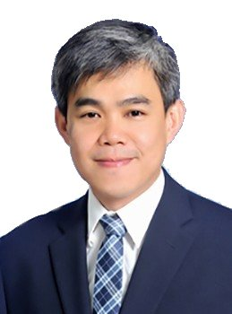
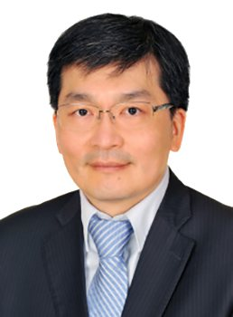

各位中大 EMBA 114 星泰參訪團夥伴：
很開心我們偕同沈副院長、一般組與兩岸組幹部、同學與學長，一起為中大管院的 EMBA 開創了一個海外參訪的新局面。這不僅是本院第一次以此規模籌辦的海外參訪，更象徵著我們在培育具備全球視野的經營人才上，邁出了嶄新的一步。
在全球供應鏈快速重組、區域政經情勢持續演變的時代，唯有真正走進市場現場、深入理解在地制度與文化脈絡，才能培養出足以支撐企業長遠發展的國際競爭力。跨國、跨文化的學習與交流，從來不只是增廣見聞，而是我們理解世界運作邏輯、掌握趨勢先機、進而做出正確經營決策的關鍵能力。此次我們即將從全球供應鏈與區域政經的視野出發，展開東南亞星洲與曼谷企業經營策略的學習之旅：在一系列知名國際學府（NUS、SWU）、重要國際企業與金融機構，以及推動 AI 基建與數位發展的國家單位的參訪中，親身觀摩科技、金融、制度設計與跨文化調適如何在真實決策中交織運作。這些第一手的交流與對話，正是國際經營智慧最珍貴的養分。
期待每位學員與師長，都能把在學院中習得的理論與知識，帶到這趟旅程中直接對話、驗證、甚至挑戰。也期盼大家能保持開放與好奇的心，勇敢探索過去未曾設想的可能性——無論是新的市場、新的合作夥伴，還是經營思維上的新突破。世界的舞台遠比我們想像的更寬廣，這趟旅程正是邀請大家跨出既有框架、擁抱更多可能的起點。
願這段旅程為大家留下彌足珍貴的回憶，累積能點亮企業與人生下一階段的智慧，也期盼我們能以中大人的身分，共同為國家社會盡一份心力，成就屬於我們的美好願景。我個人也同心期待這即將展開的旅程，並將銘記其中互動的點點滴滴。在此除了祝福整體行程圓滿順利之外，也預祝所有同行學員與學長，未來一切順心、事業有成！
中大管理學院院長
葉錦徽
Dear Colleagues and Friends of the NCU EMBA 114 Singapore & Bangkok Study Mission,
It is with great pleasure that I join Associate Dean Shen, our General Track and Cross-Strait Track officers, fellow students, and alumni in opening a new chapter for the NCU College of Management EMBA program: our first overseas study mission of this kind. Together, we now set out on a journey of discovery through the global supply chain and the regional political economy of Southeast Asia, one that will take us deep into the business strategies shaping Singapore and Bangkok today.
In today's interconnected economy, no enterprise can thrive by looking inward alone. Real competitive advantage is built at the intersection of markets, cultures, and systems — in the ability to read a region's institutions, anticipate its regulatory currents, and work fluently across differences in language, custom, and expectation. This is precisely the spirit of our mission. Through visits to distinguished institutions such as the National University of Singapore and the Southeast Asia University, alongside leading international corporations, financial institutions, and the national agencies driving AI infrastructure and digital transformation, we will observe firsthand how technology, finance, institutional design, and cross-cultural adaptation converge in real, high-stakes decisions. It is in these exchanges — candid, cross-border, and cross-disciplinary — that the most valuable lessons in international business are learned.
I encourage every participant, faculty member included, to bring the frameworks and theories we have studied together in the classroom into direct conversation with the realities we will encounter on the ground. Test them. Question them. Let them be sharpened by what you see and hear. My hope is that each of you will return not only with new insight for your own enterprise and career, but with the confidence to explore possibilities you have not yet imagined — new markets, new partnerships, new ways of thinking about growth. The world beyond our borders is rich with such possibilities, and this mission is your invitation to step toward them with curiosity and an open mind.
May this journey leave each of you with memories worth keeping, wisdom worth carrying forward, and a renewed sense of purpose — both for the organizations you lead and for the wider society we, as members of the NCU community, are proud to serve. I look forward to walking this path together with all of you, and I wish our entire delegation a rewarding, insightful, and truly memorable journey ahead.
With warm regards and best wishes,
Jin-Hui Yeh
Dean, College of Management
National Central University

In recent years, Southeast Asia has become one of the most dynamic regions for global economic growth. It is not only an important base for the restructuring of international supply chains, the development of the digital economy, and innovation and entrepreneurship, but also a key region that Taiwanese enterprises cannot overlook when expanding into overseas markets and developing regional strategies.
This study tour to Singapore and Thailand marks the first overseas visit arranged by NCU EMBA to these two countries. I hope that all students will draw upon their rich professional and managerial experience, actively ask questions, and engage in meaningful exchanges throughout the visit. Through practical cases from multinational corporations and local institutions, I hope this journey will inspire new insights into business management.
I also hope that this trip will help everyone broaden their international perspectives and professional networks, strengthen the bonds among classmates, and transform what they see and learn into valuable nourishment for future business development and organizational innovation. I wish you all a fruitful journey, and I hope this visit will become a meaningful and memorable chapter in your EMBA learning experience.
Associate Dean, Prof. Chien-wen (Mark) Shen